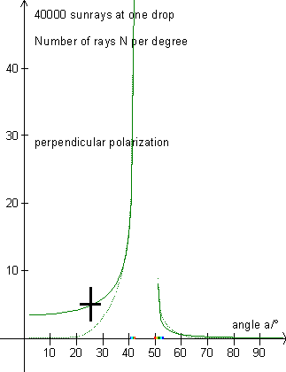

On the above figure, like in »the colors of the rainbow« 40000 (forty-thousand) rays are sent at one drop, whereupon the number of rays per degree are counted for rays with an impact parameter p < pmax (full-drawn graph), respectively for rays with an impact parameter p > pmax (dashed graph).
The figure shows the rays in the rainbows after the loss by scattering corresponding to F4 in »the colors of the rainbow« for perpendicularly polarized light. The wavelength l = 546.1 nm.
Observe that the perpendicularly polarized light of the primary rainbow can interfere 100% for angles greater than 37°. For angles below 37° the two rays can only partially extinguish each other.
Exercise 19
Choose »Polarization and colors« in the program and study the above graph and the corresponding graph for parallel polarization. Explain which incident rays compose each part of the graphs (8 parts!).
Notice the two rainbow intervals on the first axis of the figures and explain why it is unusual to see interference bows near the secondary rainbow.
Why is parallel polarization not considered in »Young's interference«?